Azure Spring Apps 上的 Java 开发
注意：Azure Spring Apps 是 Azure Spring Cloud 服务的新名称。
本教程将演示如何使用 Visual Studio Code 创建 Java Web 应用程序。你将学习如何在本地运行、调试和编辑 Java Web 应用，然后将其部署到专为 Java 工作负载构建的全托管微服务平台：Azure Spring Apps。
场景
我们将把一个简单的 Spring Boot 入门 Web 应用部署到 Azure Spring Apps。
Azure Spring Apps 可以轻松地将 Spring Boot 微服务应用程序部署到 Azure，无需更改任何代码。该服务管理 Spring Apps 应用程序的基础设施，使开发人员能够专注于代码编写。其他优势包括：
- 高效迁移现有 Spring 应用，并管理云缩放和成本。
- 通过 Spring Apps 模式实现应用现代化，提高敏捷性和交付速度。
- 以云规模运行 Java，并在无需复杂基础设施的情况下提高使用率。
- 在无需容器化依赖的情况下快速开发和部署。
- 高效且轻松地监控生产工作负载。
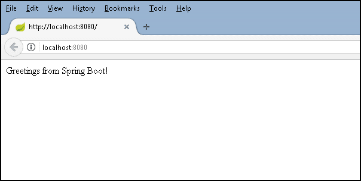
准备工作
在运行和部署此示例之前，你必须在本地开发环境中安装 Java SE 开发工具包 (JDK) 版本 11 或更高版本以及 Apache Maven 构建工具。如果尚未安装，请先安装这些工具。
下载并安装 Java 扩展包。
>注意：要完成本教程，必须将 JAVA_HOME 环境变量设置为 JDK 的安装位置。
下载 Apache Maven 版本 3 或更高版本：
为本地开发环境安装 Apache Maven：
下载并测试 Spring Boot 应用
将 Spring Boot 入门 示例项目克隆到本地计算机。你可以通过命令面板（kb(workbench.action.showCommands)）中的 Git: Clone 命令克隆 Git 仓库。粘贴 https://github.com/spring-guides/gs-spring-boot.git 作为远程仓库的 URL，然后决定本地仓库的父目录。之后，导航到该文件夹并输入 code .，在 VS Code 中打开克隆仓库中的 complete 文件夹。
>注意：你可以从 https://code.visualstudio.com 安装 Visual Studio Code，并从 https://git-scm.com 安装 Git。
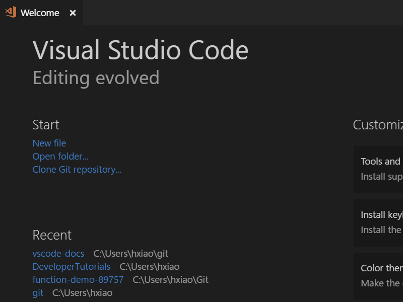
在 VS Code 中，打开 complete 文件夹内的任意 Java 文件（例如 src\main\java\hello\Application.java）。如果你尚未为 VS Code 安装 Java 语言扩展，系统会提示你安装 Microsoft Java 扩展包。按照说明操作，并在安装完成后重新加载 VS Code。
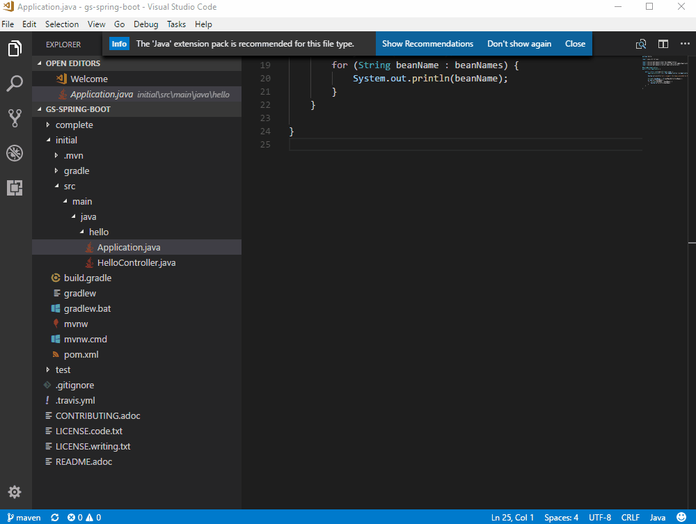
安装 Java 扩展包后，它将自动为你构建项目（构建可能需要几分钟）。你可以通过按 kb(workbench.action.debug.start) 并选择 Java 环境，在 VS Code 中运行应用程序。Java 调试扩展将在项目的 .vscode 文件夹下为你生成调试配置文件 launch.json。你可以在 VS Code 状态栏中查看构建进度，一切就绪后，最终的活动调试配置将显示出来。
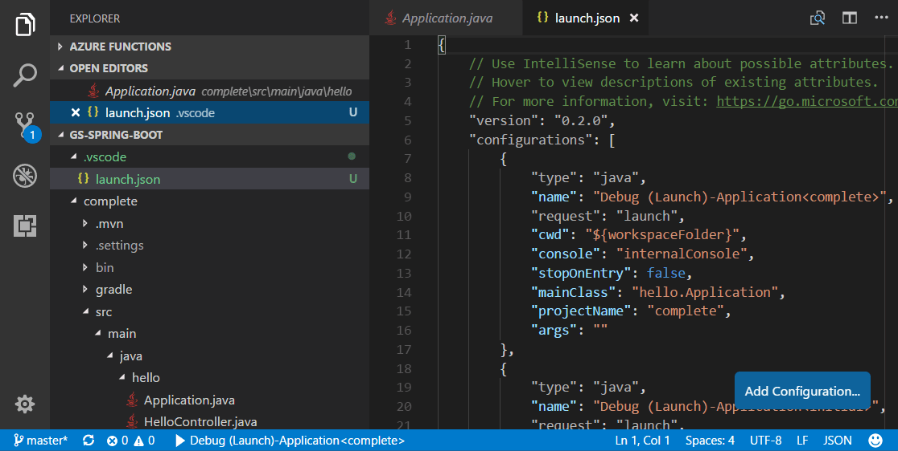
你可以在调试启动配置中了解有关 VS Code 如何启动应用程序的更多信息。再次按 kb(workbench.action.debug.start) 以启动调试器。
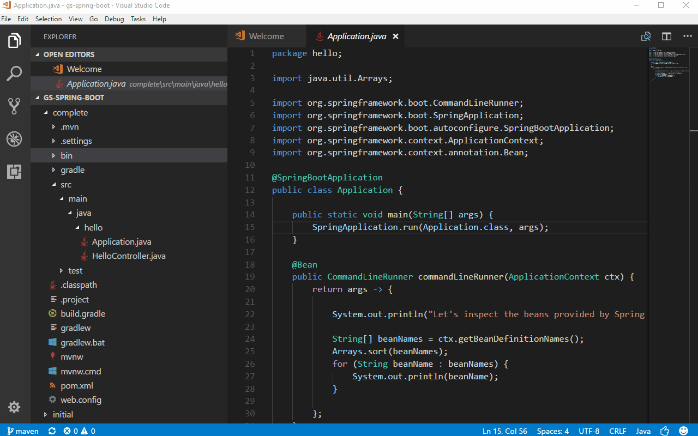
使用 Web 浏览器访问 http://localhost:8080 来测试 Web 应用。你应该会看到以下消息："Greetings from Spring Boot!"。
进行更改
现在让我们编辑 HelloController.java，将 "Greetings from Spring Boot!" 更改为其他内容，例如 "Hello World"。VS Code 为 Java 提供了出色的编辑体验，请参阅编辑和导航代码以了解 VS Code 的编辑和代码导航功能。
选择编辑器顶部的重启按钮以重新启动应用，并通过重新加载浏览器查看结果。
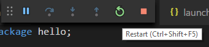
调试应用程序
在应用程序源代码中设置断点（kb(editor.debug.action.toggleBreakpoint)），然后重新加载浏览器以触发断点。
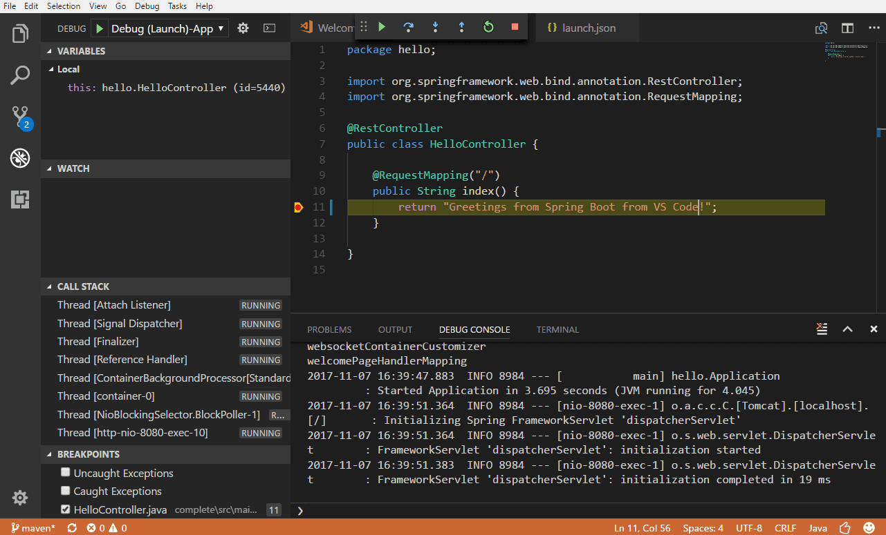
如果你想了解有关使用 VS Code 调试 Java 的更多信息，可以阅读 Java 调试。
恭喜，你的第一个 Spring Boot Web 应用已在本地成功运行！继续阅读以了解如何在云端托管它。
部署到 Azure Spring Apps
我们刚刚构建了一个 Java Web 应用并在本地运行了它。现在，你将学习如何从 Visual Studio Code 部署并在 Azure Spring Apps 上运行它。
安装 Azure Spring Apps 扩展
Azure Spring Apps 扩展用于创建、管理和部署到 Azure Spring Apps，其主要功能包括：
- 在 Azure Spring Apps 中创建/查看/删除应用
- 将 Jar 部署到应用
- 通过公共/私有终结点访问应用
- 启动、停止和重启应用
- 横向扩展/缩减、纵向扩展/缩减应用
- 配置应用程序设置，如环境变量和 JVM 选项
- 从应用流式传输日志
要安装 Azure Spring Apps 扩展，请打开扩展视图（kb(workbench.view.extensions)）并搜索 azure spring apps 以筛选结果。选择 Microsoft Azure Spring Apps 扩展。若需要命令行体验，你还可以查看使用 Azure CLI 的 Azure Spring Apps 快速入门。
登录到 Azure 订阅
部署过程使用 Azure Account 扩展（作为依赖项随 Spring Cloud 扩展一起安装），你需要使用 Azure 订阅登录。
如果你没有 Azure 订阅，可以注册一个免费 Azure 账户。
要登录到 Azure，请从命令面板（kb(workbench.action.showCommands)）运行 Azure: Sign In。或者，你可以通过单击 SPRING APPS 资源管理器中的 Sign in to Azure... 来登录到你的 Azure 账户。
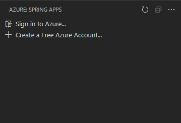
在 Azure Spring Apps 上创建应用
登录到你的 Azure 账户并在 Visual Studio Code 中打开应用后，选择活动栏中的 Azure 图标以打开 Azure 资源管理器，你将看到 Azure Spring Apps 面板。
- 右键单击你的订阅，选择 Create Service in Portal。在 Azure 门户上完成以下步骤，以创建 Azure Spring Apps 服务实例。
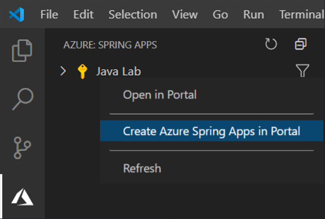
- 服务实例创建后，刷新 Azure 资源管理器以显示新的服务实例。右键单击该服务实例，选择 Create App。输入应用名称，选择 Java 版本，然后按
kbstyle(Enter)开始创建。应用将在几分钟内准备就绪。
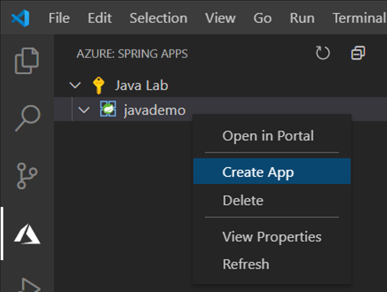
构建和部署应用
你可以打开命令提示符或终端窗口，使用 Maven 命令构建项目。构建将在 target 目录中生成新的 war 或 jar 构件。
mvn clean package- 在 Azure 资源管理器中右键单击应用，选择 Deploy，并在提示时选择你构建的 Jar 文件。
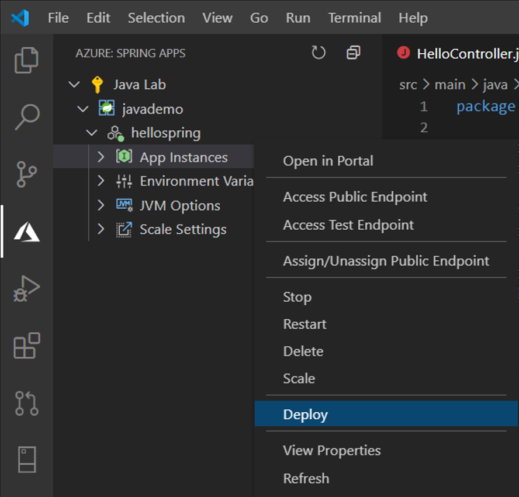
- 你可以在右下角查看部署状态。完成后，选择 Access Public Endpoint 以测试在 Azure 上运行的应用，并在提示时选择 Yes 以分配公共终结点。请注意，仅支持 Spring Boot fat Jar，请详细了解 Azure Spring Apps 上的应用。
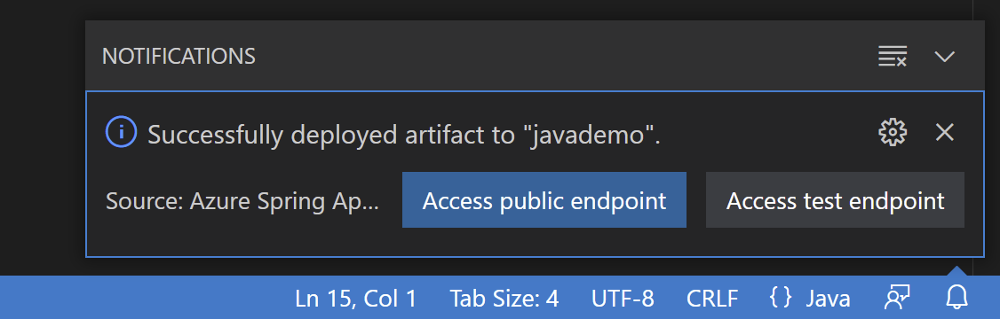
缩放应用
- 你可以通过右键单击缩放设置下的实例计数并选择 Edit 来轻松缩放应用。输入 "2" 并按
kbstyle(Enter)以缩放应用。
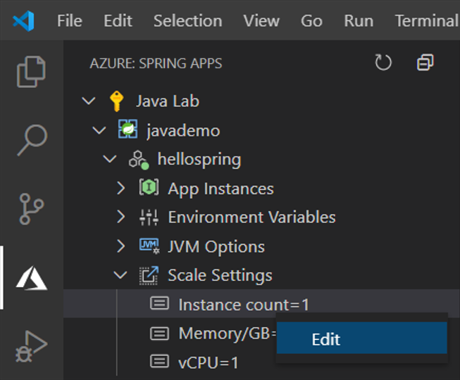
流式传输应用程序日志
- 展开应用实例节点，右键单击你想要查看日志的实例，然后选择 Start Streaming Logs。
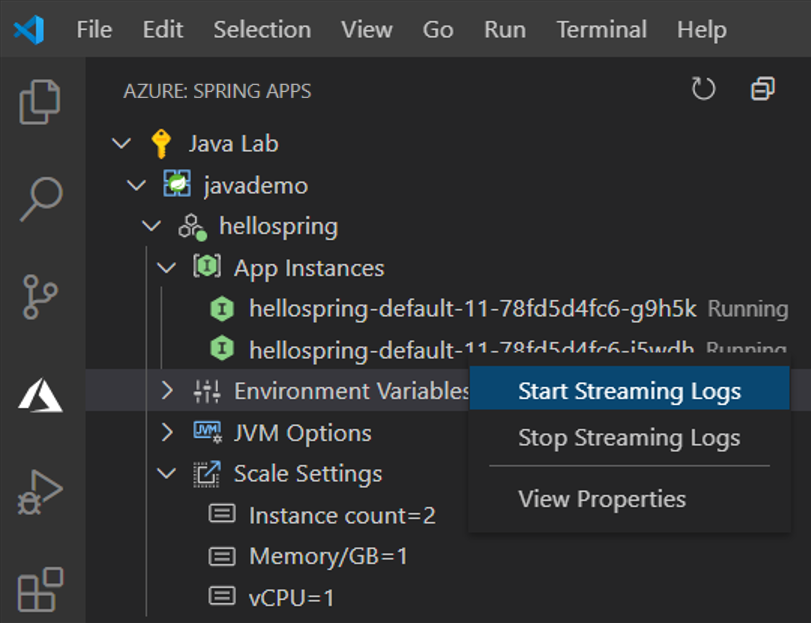
- Visual Studio Code 输出窗口将打开，并建立与日志流的连接。
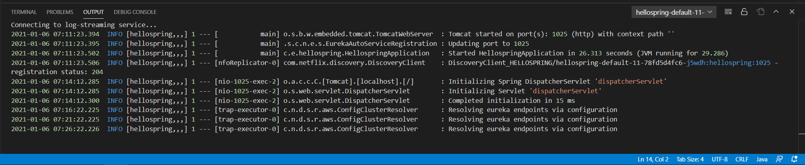
后续步骤
- 探索 Azure Spring Apps 微服务的更强大功能。
- 要了解有关 Java 调试功能的更多信息，请阅读 Java 调试教程。